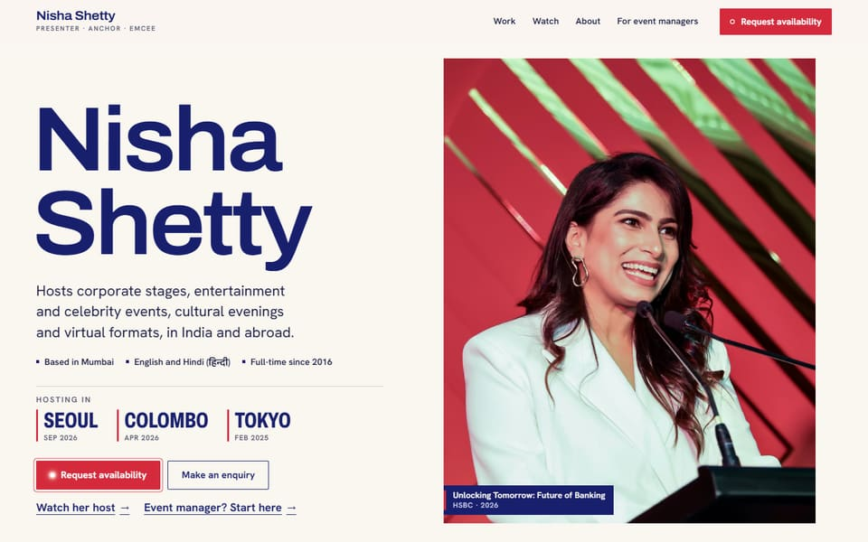
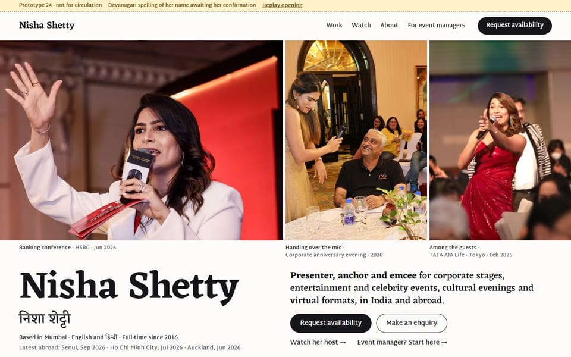
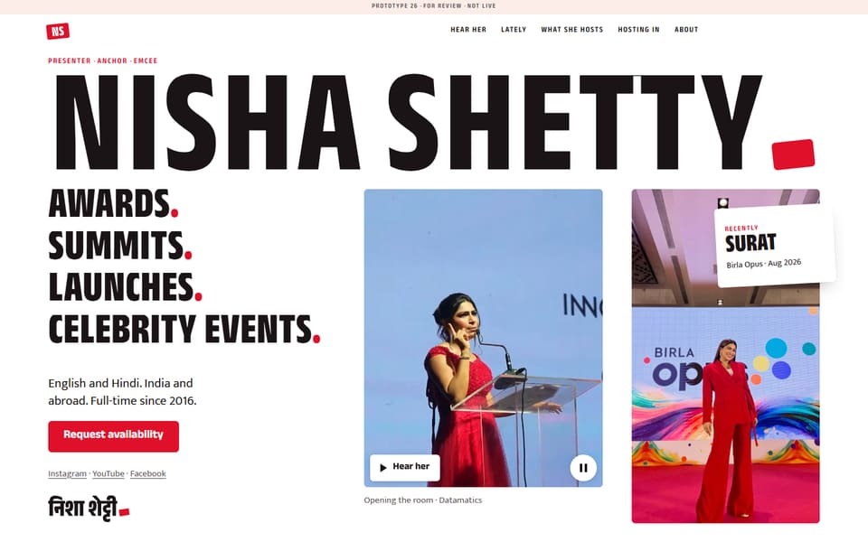
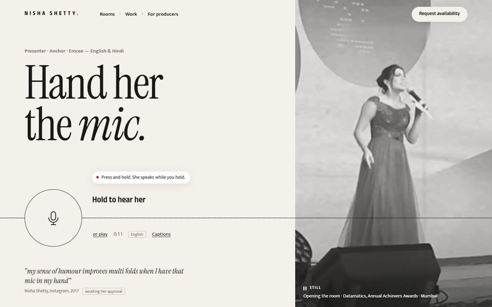
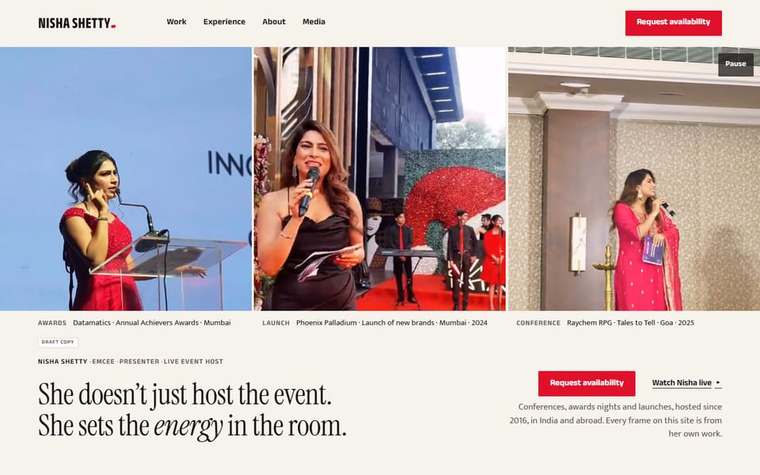

For review · not live
Nisha Shetty: website options
Different directions for the same brief, plus the newest one, Hold the Mic. Each works on desktop and phone; turn sound on for Hold the Mic.

Option 1
Calm editorial
Light and clear, with a few pages: Work, Watch, About and a page for event managers.
Open option 1 →

Option 2
Cinematic
Light and cinematic, with motion and big photography, across several pages.
Open option 2 →

Option 3
Bold brand, one page
A new brand identity on one energetic page: her footage, her voice and one clear call to action.
Open option 3 →

New · Hold the Mic
Hand her the mic
Every moment of her is a still photograph until you press and hold the mic. Then she speaks. Includes a page for producers.
Open Hold the Mic →

New · Full site (IA)
Nisha and her work
The complete multi-page site built to the new information architecture: experiences, work stories, about, media, FAQ and request.
Open the full site →